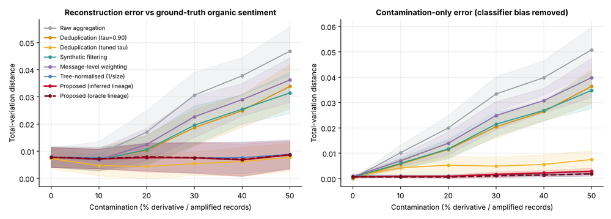
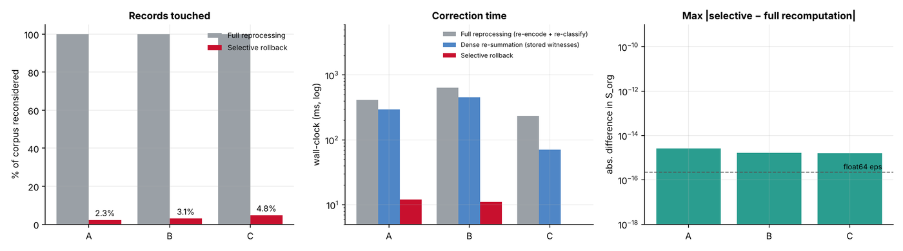

The problem
Social-media sentiment is usually measured by counting posts, so one opinion copied a thousand times (reposts, paraphrases, AI rewrites, coordinated campaigns) counts a thousand times. This project builds a graph of which post derives from which, weights every post by how independent it is, and reports organic sentiment next to the raw count.
When a source is later found to be fake, only the posts that descend from it are re-weighted, with no model re-runs, and the result equals a full recomputation. A retrieval-augmented question-answering layer on top answers “how do people feel about X?” from provenance-weighted evidence, cites independent posts, and abstains when too little independent evidence is left.
It is the working code for the patent application Confidence-Weighted Opinion Lineage for Sentiment Aggregation (Indian application 202641115708). Every formula of the disclosure is implemented, tested and benchmarked against baselines on a controlled synthetic stream.
Results
Error against contamination
Distance to the ground-truth organic sentiment, 6,000 posts, 12 seeds (lower is better):
| Method | 0% | 20% | 40% | 50% |
|---|---|---|---|---|
| Raw aggregation | 0.0077 | 0.0170 | 0.0378 | 0.0468 |
| Deduplication (threshold 0.90) | 0.0077 | 0.0103 | 0.0249 | 0.0339 |
| Message-level weighting | 0.0077 | 0.0124 | 0.0290 | 0.0362 |
| Tree-normalised weighting (1 / lineage size) | 0.0079 | 0.0077 | 0.0076 | 0.0088 |
| Proposed (inferred lineage) | 0.0077 | 0.0076 | 0.0068 | 0.0086 |
| Deduplication, threshold tuned on ground truth | 0.0073 | 0.0043 | 0.0062 | 0.0078 |

The last row is an optimistic baseline, because its threshold is picked using the answer. Against it the proposed method is comparable, not better. A simple tree-normalised weighting, which counts every lineage once using the same inferred lineage, is close behind, so most of the gain comes from knowing the lineage rather than from the exact formula.
Correcting a retraction
With 50,000 records, retracting 200 invalid sources touches 2.3% of the records and takes 16 ms against 511 ms for full reprocessing, with 0 model re-runs against 100,000, and the result matches full recomputation to 2.6e-15.

The question-answering layer
A text index (TF-IDF, deliberately unaware of lineage) returns the top candidates; the lineage layer keeps one evidence slot per lineage, ranks by relevance × weight, and abstains below an evidence floor. The generator is extractive, so it cannot hallucinate, and a checker audits every statistic and quote in an answer. A wrapper for a language model rejects answers that cite posts outside the evidence.
At 40% contamination plain retrieval gives the reader eight posts of which 4% are independent opinions; the lineage-aware answer shows 89% independent posts. Answer error falls from 0.098 (counting all 300 retrieved posts) to 0.061, a clear win over plain retrieval.
What it doesn’t do
- The data is simulated, not a real dataset: embeddings from a fixed random encoder, a sentiment classifier of about 70% accuracy. Only the relative behaviour is comparable.
- No win over a strong simple baseline. Text deduplication plus a provenance score is as accurate as the lineage-aware answer (0.0579 against 0.0611 at 40%, p = 0.55). The lineage layer’s distinct contributions are explicit amplification accounting, principled propagation of a retraction, and exact, cheap correction.
- The models are tiny stand-ins, so wall-clock gaps would be much larger with real transformers. The count of model runs (0 against 100,000) is the robust claim.
- No real language model was called; the model wrapper is tested with a stub only.
- Lineage construction is exact O(N²) similarity (about 12 s for 50,000 records); production scale would need an approximate nearest-neighbour index.